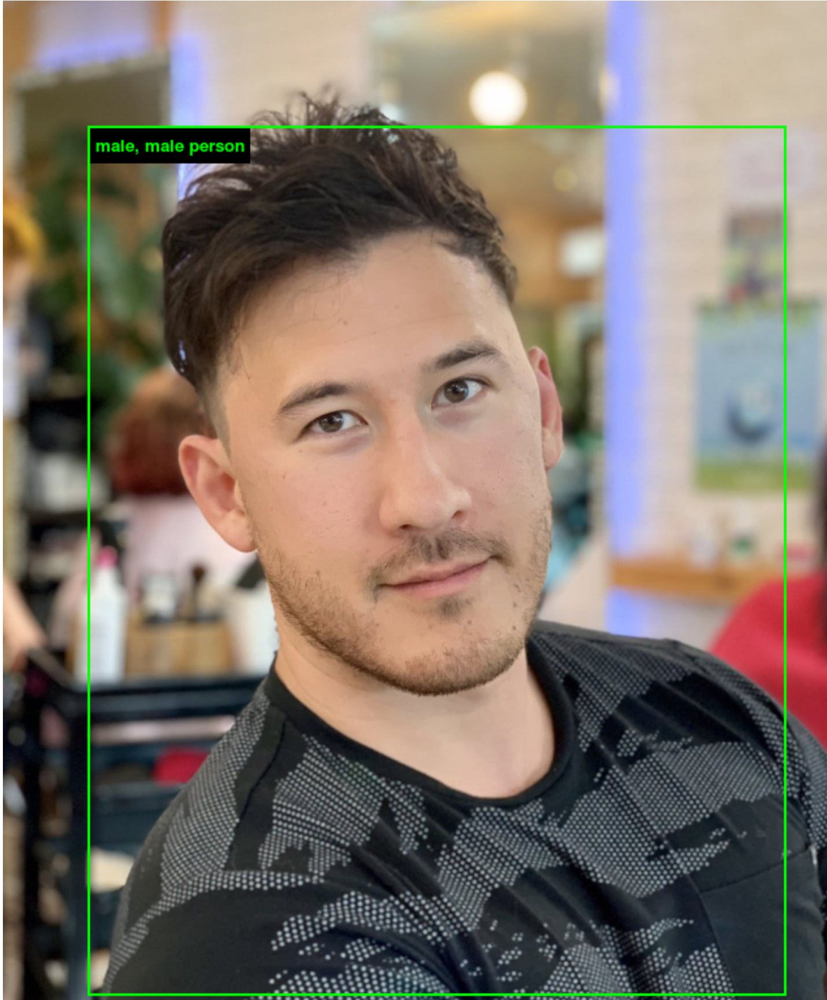

Markiplier (Mark Fishbach)


ImageNet was a training system for AI accuracy. It put images of people into categories based on skin color, sex or whatever personality trait a person could have solely on the way they look. I think those categories have tainted the AI's accuracy possibly due to the bias of the creator of the categories. The AI tends to add words that has nothing to do with the person and some I have nevered heard before. The definitions for the words underneath were odd and had definitions that made no sense.